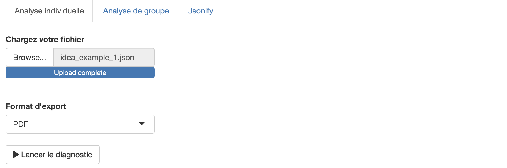

IDEATools est un package R dédié à la méthode IDEA4, visant à fournir aux utilisateurs des outils pour le traitement, l’automatisation et le reporting de diagnostics IDEA.
Installation & Prérequis
En attendant sa publication officielle sur le CRAN, vous pouvez télécharger et utiliser la version en cours de développement depuis GitHub avec :
install.packages("remotes")
remotes::install_github("davidcarayon/IDEATools")Si vous souhaitez utiliser certaines fonctionnalités avancées (interface graphique, rapports automatisés), vous des packages supplémentaires sont nécessaires, il peuvent être installés directement en préciseant l’argument dependencies :
remotes::install_github("davidcarayon/IDEATools", dependencies = TRUE)NB : Le logiciel RTools est parfois nécessaire sur les machines Windows. Vous pouvez l’installer ici : Rtools
Une fois installé, vous pouvez charger le package avec :
Prérequis pour la production de rapports
Pour la production de rapport PDF, une installation de LaTeX est requise. Si vous n’avez jamais utilisé LaTeX, vous pouvez utiliser la fonction
tinytex::install_tinytex()pour installer une version minimale de LaTeX vous permettant d’éditer des rapports au format PDF en utilisant le package IDEATools. Une fois installé, vous n’avez plus besoin de vous soucier de LaTeX (opération à réaliser seulement lors de la première utilisation).Les rapports PDF utilisent (et nécessitent donc impérativement) la police
Helvetica. Il est donc important de l’avoir installée sur votre machine.
Utilisation simplifiée
Une interface graphique utilisateur (GUI) est proposée pour les plus néophytes et permet l’utilisation d’IDEATools en presse-bouton. Il suffit simplement d’utiliser la fonction :
runGUI()Une interface va alors s’ouvrir et proposer 3 différents modules :
- Analyses individuelles (1 seul calculateur)
- Analyses de groupe (>= 3 calculateurs, maintenir MAJ pour sélectionner plusieurs calculateurs)
- Un module intitulé
jsonify2()qui permet de convertir un calculateur excel IDEA en un fichier JSON, notamment utilisé par le WEBIDEA, dans le cas où la macro excel du calculateur ne fonctionnerait pas.

Pour des analyses plus poussées, pour automatiser par exemple plusieurs diagnostics individuels (i.e. du multi-individuel), les sections ci-dessous détaillent l’utilisation plus classique du package.
Utilisation classique
Au total, 5 fonctions ou “modules†ont été développés dans ce package, allant de l’import des données d’un calculateur à la production de graphiques puis à la productions de produits de reporting (PDF, Excel, etc.) :
-
read_idea(): Permet d’identifier la validité du fichier d’entrée et d’en extraire métadonnées et items. -
compute_idea(): Calcule les indicateurs/composantes/dimensions/propriétés à partir des items -
old_idea(): Alternative aux deux fonctions précédentes si le calculateur est trop ancien (vise les indicateurs plutôt que les items) -
plot_idea(): Produit les graphiques dimensions / propriétés -
write_idea(): Export des graphiques sous forme brute ou sous forme de rapports aux formats variés.
Afin de simplifier l’utilisation du package, une fonction globale diag_idea() a été développée. Grâce à cette fonction, selon la saisie de l’utilisateur, les modules d’IDEATools vont être appelés séquentiellement afin de produire les résultats demandés. L’utilisateur peut notamment paramétrer :
- Le fichier/dossier d’entrée des données
input - Le dossier de sortie des résultats
output_directory - Le type d’analyse (individuelle ou de groupe)
type - Le type de sorties (rapport et/ou graphiques bruts)
export_type - Le types de graphiques qu’il souhaite (dans le cas d’un export brut)
plot_choices - Le format de sortie du rapport si désiré (au choix : pdf, docx, pptx, xlsx)
report_format - Le préfixe à rajouter aux fichiers de sortie (ex : le nom de la ferme) dans le cas d’une analyse individuelle
prefix - La résolution de sortie des graphiques (impacte notamment le poids des sorties)
dpi - Si l’algorithme doit afficher sa progression dans la console.
quiet - (nouveau) Dans le cas particulier ou un calculateur au format .xlsx est inséré et qu’un rapport individuel au format xlsx est demandé,
appendparamétré en TRUE permet de coller les onglets de résultats à la suite des onglets du calculateur initial, créant ainsi un calculateur “tout en un†avec données + résultats.
Voici un appel complet à la fonction diag_idea() avec toutes les possibilités de paramétrage :
diag_idea(input,
output_directory,
type = c("single", "group"),
export_type = c("report", "local", NULL),
plot_choices = c("dimensions", "trees", "radars"),
report_format = c("pdf", "docx", "xlsx", "pptx"),
prefix = "EA",
dpi = 300,
quiet = FALSE,
append = FALSE
)Pour information, les utilisateurs les moins habitués à l’écosystème R peuvent utiliser les commandes suivantes (à condition d’utiliser RStudio) pour sélectionner les dossier/fichiers via une fenêtre en presse-bouton:
input <- rstudioapi::selectDirectory() # Dans le cas d'un répertoire
# OU
input <- rstudioapi::selectFile() # Si un seul calculateur
output_directory <- rstudioapi::selectDirectory()On distingue 3 grands types de diagnostics :
Les analyses individuelles
En premier lieu, l’utilisateur peut avoir besoin d’un diagnostic pour une seule ferme. Prennons ici l’exemple d’utilisateur qui souhaite récupérer ses résultats pour sa ferme, mais uniquement ses arbres éclairés. Le code sera alors :
diag_idea(
input = "chemin_calculateur",
output_directory = "mes_resultats",
type = "single",
export_type = "local",
prefix = "MaFerme",
plot_choices = "trees",
quiet = FALSE
)Les analyses multi-individuelles
Ensuite, certains utilisateurs ont besoin de traiter plusieurs calculateurs en même temps.
Ici par exemple, l’utilisateur n’a pas besoin des figures “brutes”, mais a juste besoin pour chaque exploitation d’un rapport au format word qu’il pourra commenter ainsi qu’une présentation powerpoint contenant toutes les figures et prête à projeter. Le code sera alors :
Les analyses de groupe
Enfin, certains utilisateurs souhaitent traiter un ensemble de calculateurs en même temps et ont besoin d’avoir une vision globale sur le groupe.
Dans cet exemple, l’utilisateur va donc demander à la fois des graphiques bruts, mais aussi des rapports prêts à être imprimés (PDF) ainsi qu’un support excel qu’il pourra re-traiter à sa guise pour son analyse de group. Le code sera alors :
diag_idea(
input = "chemin_vers_dossier",
output_directory = "mes_resultats",
type = "group",
export_type = c("report", "local"),
report_format = c("pdf", "xlsx"),
quiet = FALSE
)Notons qu’il peut demander, en plus de son analyse de groupe, des rapports individuels qu’il pourra donner à chaque exploitation (par exemple au format Microsoft Word) :
Citation
Carayon D (2023). IDEATools: A collection of tools associated with the IDEA4 method.
@software{david_carayon_2023_6811276,
author = {David Carayon},
title = {davidcarayon/IDEATools},
month = oct,
year = 2023,
publisher = {Zenodo},
version = {v3.4.0},
doi = {10.5281/zenodo.6811276},
url = {https://doi.org/10.5281/zenodo.6811276}
}